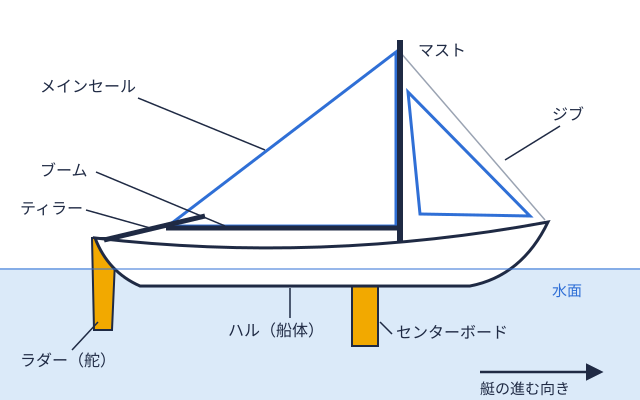

入部準備 2026-10-23
ヨット部の見学・体験乗艇の持ち物と服装｜当日に困らない準備リスト
新歓期にヨット部の見学や体験乗艇（試乗会）に誘われたものの、「何を着ていけばいいのか」「何を持っていけばいいのか」が分からず、申し込みをためらっている人もいるかもしれません。ヨットは海の上で風と水しぶきを受けるため、キャンパスでの部活見学と同じ感覚で行くと、寒さや日差しで困る場合があります。
この記事では、マリーナ・ヨットスクールが公開している体験者向けの案内を手がかりに、見学・体験乗艇に行くときの服装と持ち物の考え方を整理します。大学ヨット部ごとの案内を網羅したものではありません。最終的な持ち物は、見学を申し込む部からの案内を優先してください。
見学と体験乗艇は、準備の考え方が少し違う
最初に、「見学」と「体験乗艇」を分けて考えておくと準備が楽になります。
大学ヨット部の新歓では、艇庫やハーバーでの練習見学だけでなく、実際に艇に乗れる機会を設ける部があります。香川大学の部活紹介資料には、4月に新入生歓迎会があり、見学の際には高松の海でのクルージングやヨットの試乗会を行うと書かれています（香川大学 ヨット部の紹介）。東京工業大学（現・東京科学大学）の部活紹介ページでも、春に体験会が予定されていると案内されています（東京工業大学 ヨット部）。立命館大学ヨット部は、見学はいつでも可能で、まず部の公式メールアドレスかInstagramのDMで連絡するよう案内しています（立命館大学 ヨット部）。
ここで大切なのは、同じ「見学」という言葉でも、陸上で練習を眺めるだけの場合と、艇に乗る場合とがある点です。艇に乗る可能性があるなら、濡れる前提で準備しておくほうが安心です。どちらになるかは、申し込み時に部へ確認できます。
服装の基本は「濡れても動きやすく、冷えにくい」
ヨットスクールの体験案内には、服装についてかなり共通した内容が書かれています。たとえばラグナマリーナの体験セーリングの案内では、「濡れても良い動きやすい服装で、夏でも長袖がおすすめ」とされています（ラグナマリーナ｜ヨット体験セーリング）。青木ボートスクールの体験コースの案内も同様の内容です（青木ボートスクール｜ヨット体験コース）。
上半身・下半身
- 濡れてもよく、動きやすい服にする（デニムなど乾きにくい素材は、濡れたときに重く感じる場合があります）
- 夏でも長袖が勧められている。日差しと風から肌を守る意味があります
- 春秋は、風を通しにくい上着（ウインドブレーカーなど）があると冷えにくくなります。ビー・ウインズ・セイリングクラブの案内では、春秋冬の持参物として防寒上着が挙げられています（ビー・ウインズ｜持ち物・ご注意とお願い）
- 兵庫県立海洋体育館（芦屋マリンセンター）のレンタルヨット案内では、転覆すると下着まで濡れる可能性があるため、水着をアンダーウェアにする人もいると説明されています（芦屋マリンセンター｜服装について）
なお、体験乗艇では、入部後に使うウェットスーツやスプレートップなどの専用ウェアを買いそろえる必要はないのが一般的です。個人装備は入部後に段階的に揃えていく部が多く、整理を大学ヨット部に入る前に何を用意する？にまとめています。
靴
靴は、見落とされやすいのに差が出るポイントです。ラグナマリーナと青木ボートスクールの案内には、「滑りにくいスニーカー」を選び、サンダルやハイヒールは危険、と書かれています。さらに、デッキが着色しないようにソールが白いものが望ましいという注記もあります。芦屋マリンセンターの案内では、濡れてもよいかかとが低い靴やスポーツサンダルが適していて、素足での利用はできないとされています。
つまり、「滑りにくい」「かかとが低い」「素足でない」の3点が、施設の案内に共通する条件といえます。ただし「白いソール」や「サンダル可」などは施設ごとに違うので、部の艇庫・ハーバーのルールを確認してください。
持ち物リスト｜あると安心なもの
マリーナ・スクールの案内で挙げられている持ち物を、表にまとめます。大学ヨット部の見学でそのまま同じとは限らないため、あくまで目安です。
| 持ち物 | 使う場面・理由 | 出典の例 |
|---|---|---|
| 帽子 | 日差し対策。落下防止のストラップをつけるよう案内されている | ラグナマリーナ・青木ボートスクール |
| サングラス（メガネ） | 水面の照り返し対策。こちらも落下防止ストラップを推奨 | ラグナマリーナ・青木ボートスクール |
| 軍手（グローブ） | ロープ（シート帆を引いたり緩めたりして、帆の開き具合を調整するためのロープ全般。  ）を扱うときの手の保護 | ラグナマリーナ・三重県観光連盟掲載のヨット体験 |
| 飲み物（水筒など） | 海上は水分を補給しにくいため | ラグナマリーナ・青木ボートスクール |
| タオル | 水しぶきや濡れの対策 | ラグナマリーナ・青木ボートスクール |
| カッパ（雨具） | 雨天が予想される場合 | ラグナマリーナ・青木ボートスクール |
| 着替え | 濡れたあとに着替えるため | 芦屋マリンセンター |
| 酔い止め | 家を出る前に服用するよう案内するスクールがある | ラグナマリーナ・青木ボートスクール |
| 日焼け止め | 曇りでも日焼けしやすいという注意書きがある | ラグナマリーナ・青木ボートスクール |
| 筆記用具 | 座学やメモ用 | 青木ボートスクール・三重県観光連盟掲載のヨット体験 |
三重県観光連盟のサイトに掲載されているヨット体験プログラムの案内にも、「動きやすい服装、スニーカー、筆記用具、サングラスや帽子など日焼け対策」、グローブ（軍手可）、酔い止め、水分補給用の水筒が持ち物として書かれています（三重県観光連盟｜ヨット体験）。
ライフジャケットは自分で買わなくてよいことが多い
ラグナマリーナと青木ボートスクールの案内では、ライフジャケット（救命胴衣）は施設側で用意するとされています。ビー・ウインズ・セイリングクラブの案内でも、ライフジャケットは無料で貸し出され、必ず着用するよう書かれています。大学ヨット部の見学・体験乗艇でも、部が貸してくれる場合があります。ただし、これも部によって異なるので、「ライフジャケットは貸してもらえますか」と事前に聞いておくと確実です。
ライフジャケットの着用ルールや、泳げない場合の考え方は、泳げなくてもヨット部に入れる？で整理しています。
当日の朝にやっておきたいこと
持ち物以外に、スクールの案内で注意されている点があります。
- 酔い止めを服用しておく：ラグナマリーナや青木ボートスクールは、家を出る前の服用を勧めています。船酔いの傾向がある人は、あらかじめ薬剤師などに相談する方法もあります。ヨットの車酔い・船酔い対策はヨット部の船酔い・車酔い対策で詳しく扱っています
- 日焼け止めを塗っておく：ラグナマリーナ・青木ボートスクールの案内には、曇りでも予想以上に日焼けするという注意があります。日焼け対策の全般はヨット部の日焼け対策も参考になります
- 飲酒を避ける：ビー・ウインズ・セイリングクラブの案内では、受講当日の飲酒は大変危険とされ、二日酔いの場合は乗艇を断られることがあると書かれています。新歓シーズンは前夜に飲み会が入りやすい時期ですが、体験乗艇の前日は体調を整えておくほうが安全です
- 集合時間と場所を確認する：艇庫やハーバーは、駅から離れている場合があります。移動手段と所要時間を事前に調べておきましょう
見学を申し込む前に、部へ確認しておきたいこと
持ち物と服装は、結局のところ「どの部の、どんな見学か」で決まります。次のような点を、申し込みのメッセージで聞いておくと、当日の戸惑いを減らせます。
- 艇に乗れるのか、陸上の見学だけなのか
- ライフジャケットやウェアの貸し出しはあるか
- 集合場所（キャンパスか、ハーバー・艇庫か）と集合時間
- 更衣スペースや、荷物を置ける場所はあるか
- 経験や泳力の確認があるか
- 活動日と、見学の頻度や回数
活動日や部費も見学時に確認できるとよいポイントです。たとえば立命館大学ヨット部の案内では、土日の練習が「参加マスト帆を取り付けるために、艇の甲板から垂直に立てた、細長い支柱（棒）。」とされ、月額7,000円程度の活動費に加えて別途遠征費が必要と書かれています（前掲の立命館大学ページ）。東京工業大学の案内では、毎週土日に葉山の海で練習しているとされています。こうした条件は部ごとに大きく違うため、体験乗艇を楽しむだけで終わらせず、その部の活動日・費用・水域全国の大学ヨット部を地域ごとに分けた区分。北海道から九州まで全国に9つある。を聞いて帰ると、入部判断の材料になります。比較の軸は大学のヨット部・セーリング部はどう選ぶ？にまとめています。
未経験でも見学に行ってよい？
「ヨットは経験者が行くもの」というイメージを持っている人もいるかもしれません。ただ、各大学の案内を見ると、未経験者の入部を歓迎している部は少なくありません。東京工業大学の案内では、ほとんどの部員が大学から始めた未経験者とされています。立命館大学の案内でも、大学から始める部員でも全国を目指せる競技という趣旨の記載があります。学習院大学ヨット部についても、部員の9割ほどが大学から始めた未経験者という案内が公開されています（GU Activities｜ヨット部）。
未経験者向けの全体像は大学からヨット部は始められる？、用語が分からず不安な人は大学ヨット部の基本用語集も参考にしてください。
気になる大学の部を探すには
見学先を探すときは、ヨットマニアの水域一覧から、自分の通う大学が属する水域を確認できます。加盟大学のディレクトリを掲載しているのは、関東（関東水域・36校）と近畿北陸（近畿北陸水域・10校）のみです。北海道・東北・中部・関西・中国・四国・九州の水域には、大会成績PDFへのリンクのみを載せています。そのため、該当しない大学の部については、大学公式サイトや部のSNSで見学の案内を探すことになります。
ディレクトリがある大学では、たとえば立命館大学、東京科学大学、学習院大学のように、活動拠点や使用クラスを確認できます。拠点のハーバーが分かれば、通学時間や集合場所のイメージも持ちやすくなります。見学で見た部の大会での位置づけは、大会カレンダーや成績PDFリンク一覧で、水域の大会・成績の流れとあわせて確認できます。
まとめ
ヨット部の見学・体験乗艇の準備は、「濡れても動きやすく、日差しと風を防げる服装」「滑りにくい靴」「帽子・サングラス・軍手・飲み物・タオル・着替え」「酔い止めと日焼け止め」が基本になります。ライフジャケットは貸し出しがある場合が多いものの、部によって異なるため事前確認が確実です。前日の飲酒を避け、艇に乗るのか、何を貸してもらえるのかを部に聞いておけば、当日の不安はかなり減らせます。
ここで紹介した持ち物は、マリーナ・ヨットスクールの案内を手がかりにした一般的な目安です。実際に行く部の案内がある場合は、そちらを優先してください。
出典
- 香川大学｜ヨット部の紹介 https://www.kagawa-u.ac.jp/files/3916/1649/0265/yacht.pdf
- 東京工業大学｜ヨット部 https://www.titech.ac.jp/public-relations/students/extracurricular/organizations/sailing
- 立命館大学｜ヨット部 https://www.ritsumei.ac.jp/sports-culture/sports/group/detail/?id=44
- 学習院大学｜GU Activities ヨット部 https://www.univ.gakushuin.ac.jp/active/club/sailing.html
- ラグナマリーナ｜ヨット体験セーリング https://www.lagunamarina.co.jp/marineleisure/yacht_sailing
- 青木ボートスクール｜ヨット体験コース https://www.aokiyacht.com/school/taiken-course/
- ビー・ウインズ・セイリングクラブ｜持ち物・ご注意とお願い https://www.bewinds.co.jp/custom11.html
- 芦屋マリンセンター（兵庫県立海洋体育館）｜服装について https://ashiyamarine.jp/faq/faq-yacht/entry-53.html
- 三重県観光連盟｜ヨット体験 https://www.kankomie.or.jp/event/43358
PR
この部活・競技を応援したい方へ
体育会学生を支援するプラットフォーム「ツナカレ」で、応援できる部活を探せます。
PR
取材してほしい部活を募集中
あなたの部活・大会を取材してほしい方はこちらからご依頼ください。
オフシーズン・引退後に、長期インターンという選択
部活で培った力を実務で試す。16タイプ診断（30秒）で合う企業がわかります。